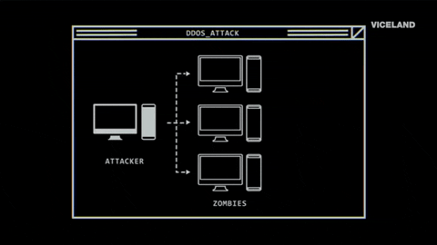
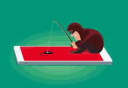

Sobre mim
Olá, meu nome é Luan. Atualmente, sou jovem aprendiz na empresa Gazin, na área de TI (Tecnologia da Informação), na cidade de Douradina, no Paraná. Tenho 17 anos e estou aqui para mostrar um pouco do que aprendi nesses primeiros meses de trabalho, e falar um pouco sobre ele. Quando cheguei aqui pela primeira vez, me surpreendi. Achava que era um lugar extremamente contraído, mas na verdade é o contrário disso. O pessoal é concentrado e participativo. Nesse pequeno tempo que trabalho aqui, já consegui aprender algumas coisas interessantes.
Minha opinião sobre programação
Antes mesmo de ter me aprofundado nesse ramo, vejo que um grande e vasto mar de oportunidades se abre diante de mim. Diversas áreas diferentes, de jeitos diferentes, para pessoas diferentes. Tantas linguagens, e cada vez isso tende a aumentar. Hoje vivemos em um mundo em que acaba sendo quase impossível sobreviver sem a internet. As pessoas passam mais tempo olhando para telas do que para si mesmas. Então, imagine o poder e a responsabilidade de quem controla e desenvolve essas áreas? Sem dúvidas, é algo extremamente grandioso.
Meus objetivos
Meus obejtivos para a minha vida é trabalhar com programação. Construir uma boa condição financeira. Uma profissão que me enteressa na mesma porcentagem, é a área de cyber segurança os "white hat" segurança na internet hoje em dia acaba sendo quase que esquecida por a maioria dos usuários. Mais infelizmente não importe oque você faça, Nunca iremos estar "seguros", infelizmente.
O que os chapéus brancos fazem? 
Os chapéus brancos são hackers éticos que utilizam suas habilidades e conhecimentos de segurança para fins legítimos e benéficos. Ao contrário dos chapéus pretos (black hats) que agem de forma maliciosa, os chapéus brancos contribuem para a segurança da internet e dos sistemas de computador. No mundo digital de hoje, onde as ameaças cibernéticas estão em constante evolução, os chapéus brancos desempenham um papel crucial na proteção de nossos dados e infraestrutura. Eles ajudam as organizações a se manterem à frente dos atacantes e a prevenir violações de segurança. às vezes também chamados de "hackers éticos" ou "bons hackers" são a antítese dos chapéus pretos. Eles exploram sistemas ou redes de computadores para identificar suas falhas de segurança para que possam fazer recomendações de melhoria. É essencial entender a diferença entre hackers de chapéu branco e hackers de chapéu preto. Embora os chapéus brancos ajudem a melhorar a segurança cibernética e a proteger as organizações, os chapéus pretos representam uma séria ameaça à privacidade online. Promover a ética na cibersegurança e colaborar com profissionais white hat é essencial para proteger os nossos sistemas e dados num mundo cada vez mais digitalizado.
O que os chapéus pretos fazem? 
Eles invadem sistemas de computador para roubar dados confidenciais, como informações financeiras, dados pessoais ou propriedade intelectual. Ataques cibernéticos: Realizam ataques para derrubar sites, interromper serviços. Chapéus pretos são hackers mal-intencionados que utilizam suas habilidades de invasão de sistemas para fins ilegais ou destrutivos. Ao contrário dos chapéus brancos que agem de forma ética, os chapéus pretos representam uma séria ameaça à segurança cibernética.
Existe também os Hackers de Chapéu Cinza (Gray Hat)
Os hackers de chapéu cinza (gray hat) operam em uma zona intermediária entre os hackers de chapéu branco e preto. Eles usam suas habilidades para explorar vulnerabilidades em sistemas de computador, mas nem sempre com a intenção de causar danos. Hackers de chapéu cinza Encontram-se em um ponto intermediário. Eles podem usar técnicas de hacking para encontrar vulnerabilidades de segurança, mas nem sempre seguem as regras. Por exemplo, um hacker de chapéu cinza pode invadir um sistema de computador sem permissão, mas depois relatar a vulnerabilidade ao proprietário do sistema.
Exemplos de atividades de Gray Hat:
- Hackear um site para encontrar e corrigir vulnerabilidades antes que sejam exploradas por hackers de chapéu preto.
- Vender informações sobre uma vulnerabilidade para uma empresa que pode ser afetada por ela.
- Realizar um teste de penetração em um sistema sem autorização, mas com a intenção de ajudar a melhorar a segurança.
Ferramentas para Hackers (Éticos e Mal-Intencionados):
O mundo dos hackers possui diversas ferramentas que podem ser utilizadas para diversos fins, tanto para o bem quanto para o mal. É importante lembrar que o uso antiético dessas ferramentas pode ter consequências graves, inclusive legais. Antes de se aprofundar no assunto, é crucial ter em mente seus objetivos e a responsabilidade que acompanha o uso dessas ferramentas.
Como se prevenir de ataques hackers mal intencionados? ver
mais...
- Use senhas fortes e exclusivas para cada conta.
- Utilize gerenciador de senhas para armazená-las com segurança.
- Habilite a autenticação de dois fatores (2FA) sempre que possível.
- Evite clicar em links suspeitos ou baixar arquivos de fontes não confiáveis.
- Tenha cuidado ao fornecer informações pessoais em sites e formulários online.
- Mantenha-se atualizado sobre as últimas ameaças e golpes online.
Ataque DDoS:
Um ataque DDoS, ou ataque de negação de serviço distribuído, é uma tentativa maliciosa de sobrecarregar um servidor, serviço ou rede com tráfego artificial, tornando-o indisponível para usuários legítimos. Nem as grandes empresas tem total controle disso.A sigla também pode vir acompanhada de mais um “D”: DDoS que, em inglês, é a abreviação de Distributed Denial of Service ou ataque distribuído de negação de serviço, em português. Quando um ataque de negação de serviço é distribuído, significa que várias máquinas são utilizadas para fazer as requisições simultâneas.
- Ataque à Amazon Web Services em 2016, que derrubou sites como Netflix e Airbnb.
- Ataque à Dyn em 2016, que afetou sites como Twitter, Spotify e Reddit.
- Ataque à Google em 2020, que foi o maior ataque DDoS já registrado.
Ataques de Phishing: Enganando para roubar.
Os criminosos criam emails ou mensagens que se parecem com mensagens legítimas de empresas ou instituições conhecidas. Eles podem usar logos, cores e linguagem semelhantes para enganar o usuário. Phishing é um tipo de ataque cibernético que tenta enganar o usuário para que ele revele informações confidenciais, como senhas, dados bancários ou informações pessoais. Os ataques de phishing são realizados através de emails, mensagens de texto, links em sites ou redes sociais, e até mesmo através de ligações telefônicas.Phishing (pronunciado: fishing) é um ataque que tenta roubar seu dinheiro ou a sua identidade fazendo com que você revele informações pessoais, tais como números de cartão de crédito, informações bancárias ou senhas em sites que fingem ser legítimos.Phishing é um tipo de ciberataque que persuade as pessoas a tomar uma ação que dá a um golpista acesso ao seu dispositivo. Foi escolhido devido à semelhança com outra palavra do vocabulário inglês, fishing, que significa pescar.
- Ataque ao Gmail em 2017, que afetou milhões de usuários.
- Ataque ao Microsoft Office 365 em 2019, que direcionava empresas.
- Ataque à campanha presidencial dos EUA em 2020.